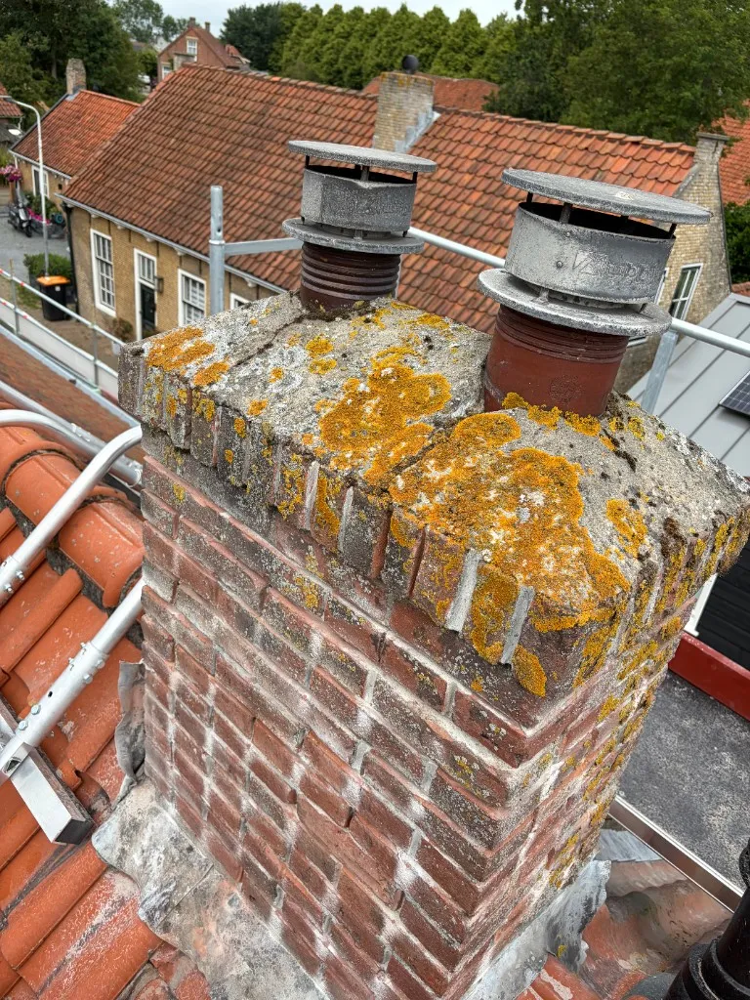
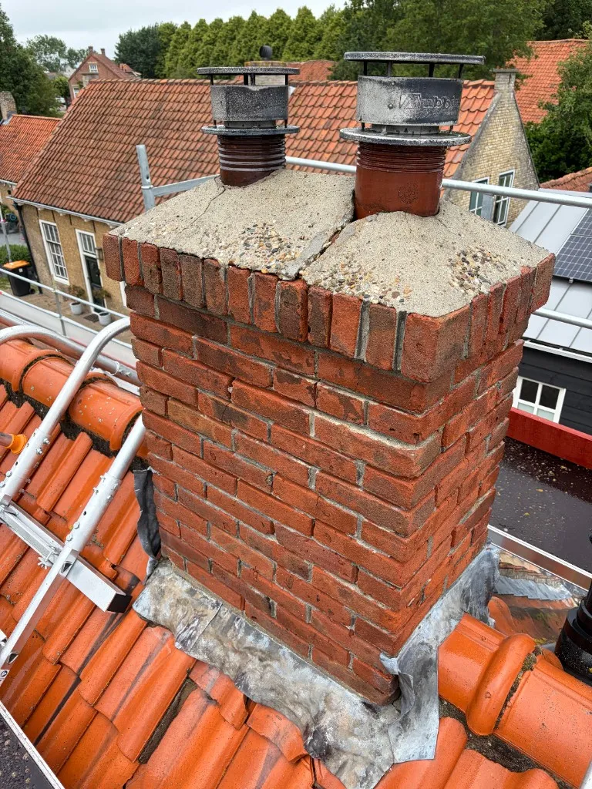
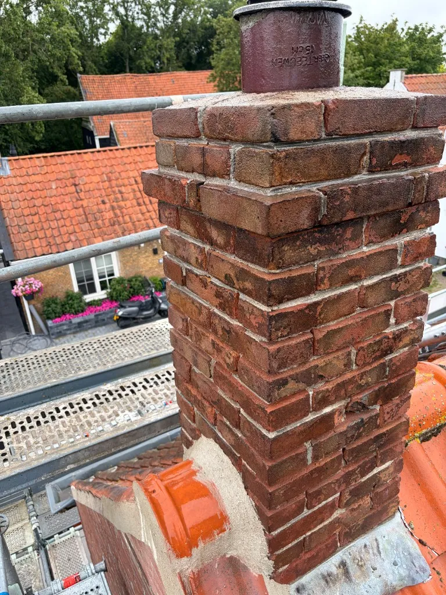

Schoorsteen renoveren: reinigen, voegen en beton
Mos en korstmos eraf, voegwerk vernieuwd en een nieuwe betonnen afdekvloer zodat de schoorsteen weer waterdicht is.
Reiniging · voegwerk · beton
Eerst schoon, daarna voegen en de afdekvloer herstellen.
Meerdere schoorstenen op één pand zijn volledig aangepakt. Eerst is oude aanslag van mos en korstmos verwijderd, zonder de steen of de bestaande voeg onnodig te beschadigen. Per schoorsteen is de voor- en nasituatie vastgelegd.
Daarna zijn de schoorstenen opnieuw gevoegd en voorzien van een nieuwe betonnen afdekvloer. Die vloer houdt regen tegen op de plek waar een schoorsteen het eerst slijt. Het resultaat is een strakke, waterdichte en weer verzorgde schoorsteen.
- Reinigen zonder de steen te slopen
- Opnieuw voegen
- Nieuwe betonnen afdekvloer
- Voor- en nafoto's
Uitgevoerd werk
Eigen foto's van deze klus, geen stockbeelden.



Veelgestelde vragen
Kunnen jullie een schoorsteen alleen reinigen?
Ja. Soms is reinigen genoeg. Als de voeg of de afdekvloer ook slecht is, combineren we dat in dezelfde klus, zoals bij dit project.
Waarom een nieuwe afdekvloer?
De bovenkant van een schoorsteen vangt de regen. Een versleten betonvloer laat water in het metselwerk lopen. Een nieuwe vloer maakt die aansluiting weer dicht.
In welke regio werken jullie?
Vanuit Dordrecht in Zuid-Holland en omstreken, en bij grotere klussen in overleg ook verder.
Schoorsteen laten reinigen of opnieuw voegen?
Stuur foto's via WhatsApp of vraag een vrijblijvende offerte aan. Meestal reactie binnen 24 uur.